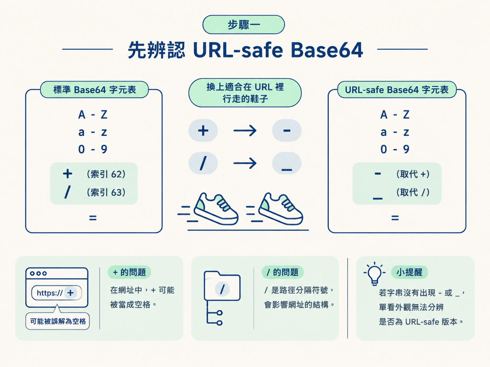
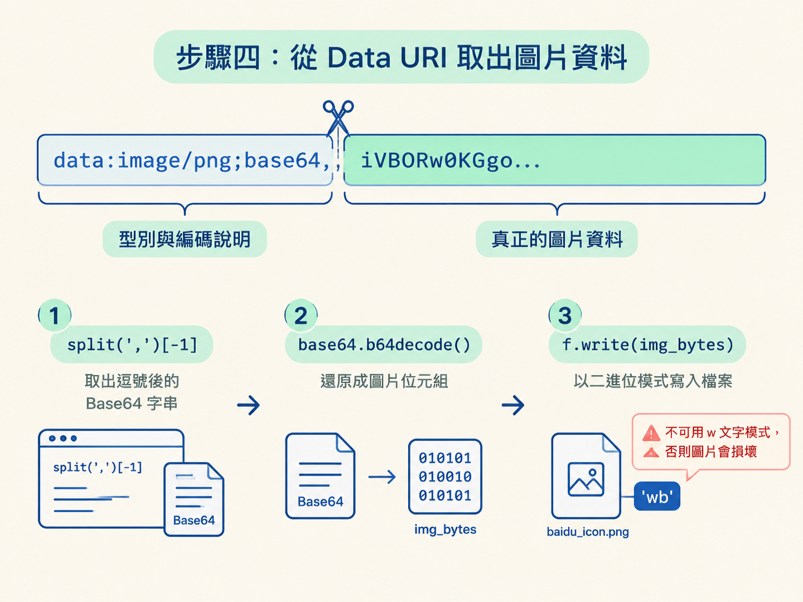

當你在 DevTools 的 Network、Elements 或程式碼裡找到一串可疑資料，下一步通常是先辨識格式，再決定怎麼還原。這正是「抓取 → 判斷保護方式 → 逆向處理」流程中的銜接點。
這一節會處理兩種常見情況：帶有 -、_ 的 URL-safe Base64，以及直接塞在 HTML 裡的 data:image/...;base64, 圖片。做完後，你會得到原始文字、位元組，或一個能正常開啟的圖片檔。
動手前，只需要先知道標準 Base64 的 b64encode、b64decode，以及 Base64 長度不足時可能需要用 = 補齊。接下來照著五個步驟操作即可。
先看字串使用了哪些符號。標準 Base64 的字元來自 A-Z a-z 0-9 + / =；URL-safe Base64 則用 - 代替 +，用 _ 代替 /。
這樣替換，是因為 + 在網址中可能被當成空格，而 / 又是路徑分隔符號。把它們換掉，就像替資料換上一套適合在 URL 裡行走的鞋子，能避開這些特殊解讀。

因此，當你在 URL 參數或檔名附近看到 -、_，就可以優先檢查它是不是 URL-safe Base64。不過，如果字串沒有出現這兩個符號，單靠外觀就不一定能分辨，仍要配合資料來源與解碼結果判斷。
確認是 URL-safe 變體後，先做兩次替換：
- 換回 +。_ 換回 /。換完後，資料就回到標準 Base64 的字母表，可以交給 b64decode() 處理。核心程式如下：
import base64
# 一般规则： + t替换 - /替换成_
…
data = s.replace("-","+").replace("_","/")
ret = base64.b64decode(data)
print(ret)其中，s.replace("-","+") 先還原加號，接著的 .replace("_","/") 再還原斜線。base64.b64decode(data) 負責解碼，回傳值 ret 是位元組。
用一小段資料對照，會更容易看出差異。標準 Base64 的 //8= 經過替換後，會變成 URL-safe 版本的 __8=：
標準： //8=
URL-safe：__8=從 URL 參數取得的 Base64，有時會省略尾端的 =。這時先檢查長度，並用 s += "=" * (-len(s) % 4) 補到 4 的倍數，再交給 b64decode()。
解碼後得到的是位元組。如果原始內容確實是文字，再接著使用 .decode() 轉成字串；如果原始內容是圖片或其他二進位資料，就不要做文字解碼。
補
=只能處理尾端填充符號被省略的情況。如果資料內容本身已經被截斷，單純補上=並不能找回遺失的內容。
另一個常見案例，是你在 DevTools 的 Elements 裡看到圖片沒有一般網址，而是一整串 data:image/png;base64,...。登入頁驗證碼或小圖示，都可能用這種方式直接放進 HTML。
Data URI 的格式是 data:image/<型別>;base64,<資料>。逗號前面是在說明資料型別與編碼方式；真正的圖片內容藏在逗號後面。
處理時依序做三件事：
s.split(",")[-1] 取得逗號後的 Base64 資料。base64.b64decode() 還原成圖片位元組。"wb" 寫入檔案。base64_img = s.split(",")[-1]
print(base64_img)
img_bytes = base64.b64decode(base64_img)
print(img_bytes)
with open("baidu_icon.png", "wb") as f:
f.write(img_bytes)第一行切掉 Data URI 前綴，只留下圖片資料。接著，b64decode() 將文字形式的 Base64 還原成 img_bytes。最後，f.write(img_bytes) 把這些位元組寫進 baidu_icon.png。

這裡最容易踩雷的是檔案模式。圖片一定要用 "wb"，也就是二進位寫入；不能使用 "w"。文字模式可能對內容進行編碼處理，寫出的圖片就可能無法正常開啟。
不要只看程式沒有報錯。還要確認輸出的內容真的是你預期的圖片，可以用兩種方式檢查。
print(img_bytes) 顯示的開頭位元組。PNG 會以 b'\x89PNG' 開頭，JPEG 則會以 b'\xff\xd8' 開頭。如果接下來要把驗證碼交給 OCR，這一步尤其重要。先確認圖片沒有在切割、解碼或寫檔時損壞，才不會把前面的資料錯誤誤認為 OCR 辨識失敗。
如果對方使用的是一般 URL-safe Base64，也就是只把 +、/ 換成 -、_，上述替換與解碼流程就適用。遇到標準格式的 Data URI 圖片，也可以直接從逗號後方取值並解碼。
但若對方重新排列整套 64 個字元，使用自訂字母表，單純執行 replace 就不夠了。你必須先從程式碼裡找出對方使用的字母表，再重建對照關係。
另外，有些長 Base64 字串會每 76 個字元折行。遇到這種資料時，也要先處理換行，再判斷是否能用標準方式解碼。這類情況已經不只是替換兩個符號，後面的進階保護案例會再深入處理。
URL-safe Base64 的處理順序是：辨認
-與_、換回+與/、需要時補上=，最後用b64decode()解碼。Data URI 圖片的處理順序則是：取出逗號後的 Base64、解碼成圖片位元組，再用
"wb"寫入檔案。完成後，應該能看到正確的檔案開頭，並正常開啟圖片。
URL 與 Base64 都屬於可逆的編碼，只要辨認出規則，就能照原路還原。下一節會進入另一類經常出現在簽名參數裡、卻不能直接反向還原的資料：摘要演算法。